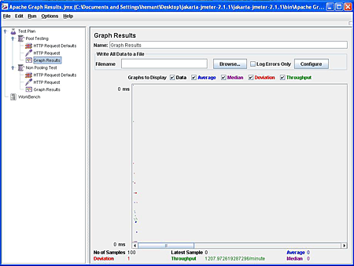
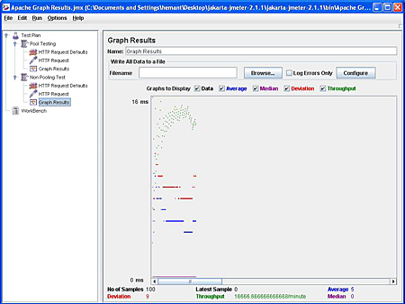

Software object pooling is not a new concept. There are many
scenarios where some type of object pooling technique is employed to
improve application performance, concurrency, and scalability. After
all, having your database code create a new Connection
object on every client request is an expensive process. Moreover, with
today's demanding applications, creating new connections for data access
from scratch, maintaining them, and tearing down the open connection
can lead to massive load on the server.
Connection pooling eliminates JDBC overhead. Further, object pooling also helps to reduce the garbage collection load. In this article, we'll look at an elegant way of creating a pool of open database-connection objects in Tomcat, so that they are handy whenever an application needs to access a DB resource.
With Database Connection Pooling (DBCP), we can scale our applications to handle increased load and deliver high performance benefits. Using recycled database connection objects cuts the time taken to re-instantiate and load frequently used objects, thus reducing unnecessary overheads. Configuring a DB pool can be a daunting task, because there has to be a way for different components within an application to know about the available pooled objects, and a mechanism to locate them. This is exactly where JNDI steps in, tying these dependencies together.
The Java Naming and Directory Interface (JNDI) has been at the core of Java EE since its inception. JNDI offers a generic mechanism for Java EE components to find other components, resources, or services indirectly at runtime. The primary role of JNDI in a Java EE application is to provide an indirection layer, so that components can find required resources without being particularly aware of the indirection. This indirection is almost transparent. JNDI helps in holding applications together, but this coupling is very flexible, so that apps can be easily reassembled. JNDI spares you from providing direct references to the data source, JDBC driver class names, user names and passwords, or any vendor-specific quirks of setting up pooling. We just look up all of these dependencies at runtime through a JNDI call. The developer, on the other hand, is ignorant of the external resources.
Our approach to DBCP uses the Jakarta-Commons database connection pool. But first, we need to configure the JNDI DataSource in Tomcat by adding a declaration for the resource to server.xml file, which resides inside the /conf directory of your Tomcat installation (indicated by the environment variable CATALINA_HOME). The JNDI DataSource is used as a factory
for connections. One of the major advantages of using a configuration
like this is that the characteristics of the pool can be changed without
affecting the application code. Our application's use of connection
pooling is almost transparent. The following code snippet shows us how
to configure the container to enable connection pooling.
<Context path="/dbcp" docBase="dbcp" debug="5"
reloadable="true" crossContext="true">
<Resource name="jdbc/TestDB" auth="Container"
type="javax.sql.DataSource" removeAbandoned="true"
removeAbandonedTimeout="30" maxActive="100"
maxIdle="30" maxWait="10000" username="kunal"
password="java_facier"
driverClassName="com.mysql.jdbc.Driver"
url="jdbc:mysql://localhost/dbcptest"/>
</Context>We can configure a maximum number of DB connections in the pool. Make
sure you choose a maximum connection count large enough to handle all
of your database connections--alternatively, you can set 0
for no limit. Further, we can set the maximum number of idle database
connections to be retained in the pool. Set this value to -1
for no limit. The most optimal performance is attained when the pool in
its steady state contains just enough connections to service all
concurrent connection requests, without having to create new physical
database connections at runtime. We can also specify the maximum time
(in milliseconds) to wait for a database connection to become available,
which in this example is 10 seconds. An exception is thrown if this
timeout is exceeded. You can set this value to -1 to wait indefinitely. Please make sure your connector driver, such as mysql.jar, is placed inside the /common/lib directory of your Tomcat installation.
To achieve performance and high throughput, we also need to fine-tune
the container to work under heavy traffic. Here's how we'll configure
the Connector element for the maxProcessors and acceptCount parameters in the server.xml file:
<!-- Configuring the request and response endpoints -->
<Connector port="80" maxHttpHeaderSize="8192" maxProcessors="150"
maxThreads="150" minSpareThreads="25" maxSpareThreads="75"
enableLookups="false" redirectPort="8443" acceptCount="150"
connectionTimeout="20000" disableUploadTimeout="true" />In order for JNDI to resolve the reference, we have to insert a <resource-ref> tag into the web.xml deployment descriptor file. We first begin by setting a <listener> tag for registering a ServletContextListener as shown below:
<listener>
<listener-class> com.onjava.dbcp.DBCPoolingListener</listener-class>
</listener>
<!-- This component has a dependency on an external resource-->
<resource-ref>
<description> DB Connection Pooling</description>
<res-ref-name> jdbc/TestDB</res-ref-name>
<res-type> javax.sql.DataSource</res-type>
<res-auth> Container</res-auth>
</resource-ref>
<servlet>
<servlet-name> EnrolledStudents</servlet-name>
<servlet-class> com.onjava.dbcp.CourseEnrollmentServlet</servlet-class>
<load-on-startup> 1</load-on-startup>
</servlet>
<servlet-mapping>
<servlet-name> EnrolledStudents</servlet-name>
<url-pattern> /enrollment.do</url-pattern>
</servlet-mapping>This binding is vendor-specific, and every container has its own mechanism for setting data sources. Please note that this is just a declaration for dependency on an external resource, and doesn't create the actual resource. Comprehending the tags is pretty straightforward: this indicates to the container that the local reference name jdbc/TestDB should be set by the app deployer, and this should match with the resource name, as declared in server.xml file.
As our application first starts asking the pool for Connection
objects, they will be newly created, but when the application has
finished with an object, it's returned to the pool rather than
destroyed. This has huge performance benefits. Now, as the application
needs more Connection objects, the pool will be able to issue recycled objects that have previously been returned by the application.
As an example, let's create a listener class to work with the pool. Our listener class implements the ServletContextListener interface; thus, it'll be initialized when the container starts and creates a ServletContext for this web app. Remember, there's only one ServletContext per web app. Any class implementing the ServletContextListener
interface is initialized when the container starts. This early
initialization cuts unnecessary overhead later, since it's ideal to have
a cached set of open database connection objects available when the
container starts rather than waiting for a client request. Inside the
listener class, we'll do the necessary JNDI lookup and then set the DataSource as a ServletContext attribute so that it's available to the entire web app. The following code snippet shows us how to extract DataSource through a JNDI call:
public class DBCPoolingListener implements
ServletContextListener{
public void contextInitialized
(ServletContextEvent sce){
try {
// Obtain our environment naming context
Context envCtx = (Context) new InitialContext().
lookup("java:comp/env");
// Look up our data source
DataSource ds = (DataSource) envCtx.lookup
("jdbc/TestDB");
sce.getServletContext().setAttribute
("DBCPool", ds);
} catch(NamingException e){ e.printStackTrace();
}
}
public void contextDestroyed(ServletContextEvent
sce){
}
}The component naming context is indicated by the prefix java:comp/env/.
For the sake of simplicity, we'll create a simple servlet,
hard-coding the business logic and presentation. We'll use the JDBC 2.0
Standard Extension API, which specifies that a database service provider
can implement a pooling technique that can allow multiple Connection objects to be shared among several requesting clients. Here's how we'll extract DataSource from the ServletContext attribute and then establish a Connection to pooled DB connection objects.
public void init() throws ServletException {
try {
//Create a datasource for pooled connections.
datasource = (DataSource) getServletContext().
getAttribute("DBCPool");
//Register the driver for non-pooled connections.
Class.forName("com.mysql.jdbc.Driver").
newInstance();
}
catch (Exception e) {
throw new ServletException(e.getMessage());
}
}The servlet is written to use either pooled or non-pooled database connections, depending on the query string passed in its URL. The servlet fetches a pooled connection object using Tomcat DBCP, and non-pooled connections directly from MySQL connector.
Here's an example of obtaining a Connection object. If the pooledConnection flag is set, it simply calls getConnection() on the DataSource. If not, it manually creates a new Connection object:
private synchronized Connection getConnection
(boolean pooledConnection)
throws SQLException {
if (pooledConnection) {
pooledCount++;
// Allocate and use a connection from the pool
return datasource.getConnection();
}
else {
nonPooledCount++;
Connection con = DriverManager.getConnection(
"jdbc:mysql://localhost/dbcptest","kunal",
"java_facier");
return con; //return a newly created object
}
}Having acquired a Connection, the servlet executes a
simple join between the course and enrollment tables, and then formats
and outputs the results as HTML. The example uses PreparedStatement
to pre-compile SQL and run it repeatedly. This eliminates the tedious
task of parsing and compiling the SQL query on every client request.
Pre-compilation improves performance and offers enhanced security by
preventing SQL injection attacks. For thread safety, we'll keep Connection, PreparedStatement, and ResultSet as local variables inside of the doGet() method.
Connections issued from the JNDI DataSource factory will
be returned to the pool when closed. Clients use a connection pool by
borrowing a connection object, using it, and then returning it to the
pool by closing it. We have to make sure that after we are done with the
Connection, we close it. If a Connection is
not closed, it will never be returned to the pool and become available
for reuse. Of course, that would tie up resources. The finally block guarantees that used ResultSet, PreparedStatement, and Connection objects are closed and prevents any connection pool leaks, as shown below:
finally {
try {if (rs != null) rs.close();} catch (SQLException e) {}
try {if (pstmt != null) pstmt.close();} catch (SQLException e) {}
try {if (connection != null) connection.close();} catch (SQLException e) {}
}Before our application hits the ground running, we would like to stress test the app, evaluate its performance, and compare the results between the cached set of pooled connection objects and the non-pooling alternative. For this, we'll rely on JMeter, an open source tool for load testing with a drag-and-drop-style GUI. I have written a test plan for stress testing the web app. I have set up JMeter to stimulate 50 concurrent users, accessing a common servlet two times without any interval. The results are pretty apparent after looking at the JMeter graph results shown in Figures 1 and 2, below.

Figure 1. Pooled DB connections deviation (click for full-size image)

Figure 2. Non-pooled DB connections deviation (click for full-size image)
After several test runs, it turned out that connection pooling is at least four times faster than explicitly creating a DB connection object from the ground up. Admittedly, to get more accurate results, JMeter should run on a different machine. The ramp-up period, which describes the amount of time for creating the total number of threads, should be carefully chosen. It's not considered to be a good idea to set it to zero if you have a large number of threads, because that would create all of the threads at once and send out requests immediately. At the same time, a higher ramp-up period is also not appropriate, as it might underestimate the results.
Connection pooling is a technique used for sharing a cached set of open database connections among several requesting clients. It doesn't require you to modify your code significantly; rather, it provides enhanced performance benefits. Object pooling should be used with care. It does require additional overhead for such tasks as managing the state of the object pool, issuing objects to the application, and recycling used objects. Pooling is best suited for objects that have a short lifetime. If you are already working in a rich Java EE environment, then most likely you would be using an out-of-box connection pooling facility provided by your app server, and your applications' use of connection pooling is almost transparent.
DataSource how-to document
Return to ONJava.com.